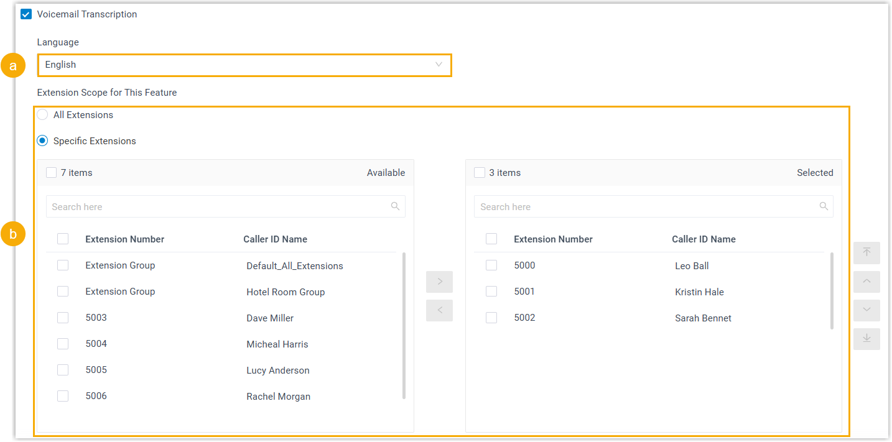

Configure AI Voicemail Transcription
This topic describes how to enable AI voicemail transcriptions, and configure the related settings such as transcription language and extension permission.
Requirements
- Firmware: 83.19.0.x or later
- Subscription: Enterprise Plan (includes 120
transcription minutes) or Ultimate Plan (includes 240
transcription minutes)Note: You can extend transcription minutes by subscribing to the AI Transcription Add-on service (Path: ).
Procedure
- Log in to PBX web portal, go to .
- Select the checkbox of Voicemail Transcription to enable the feature.
- Configure voicemail transcription settings:

- In the Language drop-down list, select the language in which group voicemail messages will be transcribed.
- In the Extension Scope for This Feature
section, specify which extensions are allowed to use voicemail
transcription feature.
- All Extensions: All extensions can use this feature.
- Specific Extensions: Only selected extensions can use this feature.
- Click Save.
Result
- The AI voicemail transcription feature is enabled. The system automatically
transcribes both group and extension voicemail messages into readable texts
in the specified languages.Note: Messages delivered to extension voicemails, including those from group voicemails in Broadcast to Members mode, are transcribed in the language individually configured for each extension (Path: ). For more information, see Configure AI Voicemail Transcription for an Extension.
- The system automatically monitors transcription usage and sends
notifications when specific capacity thresholds are reached:
- When transcription usage reaches 90% and 95% of the total capacity, the PBX sends a notification Your AI Transcription Usage is Reaching the Capacity Limit to notify relevant contacts.
- When the total capacity is fully used, the PBX sends a notification AI Transcription Limit Reached to notify relevant contacts.
Note: You can also check the usage details of AI transcription in call reports. For more information, see Access Transcription Usage Details Report.